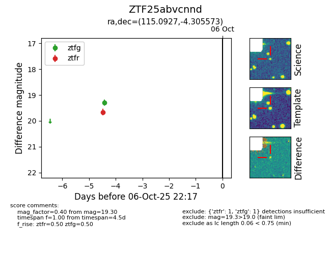

FINK: ZTF25abvcnnd
Lasair: ZTF25abvcnnd
ALeRCE: ZTF25abvcnnd
ZTF25abvcnnd (ztf,fink)
equatorial (ra, dec) = (115.0927,-4.30557)
galactic (l, b) = (222.4366,+8.84810)

last ztfg=19.30, ztfr=19.66
1 ztfg, 1 ztfr detections